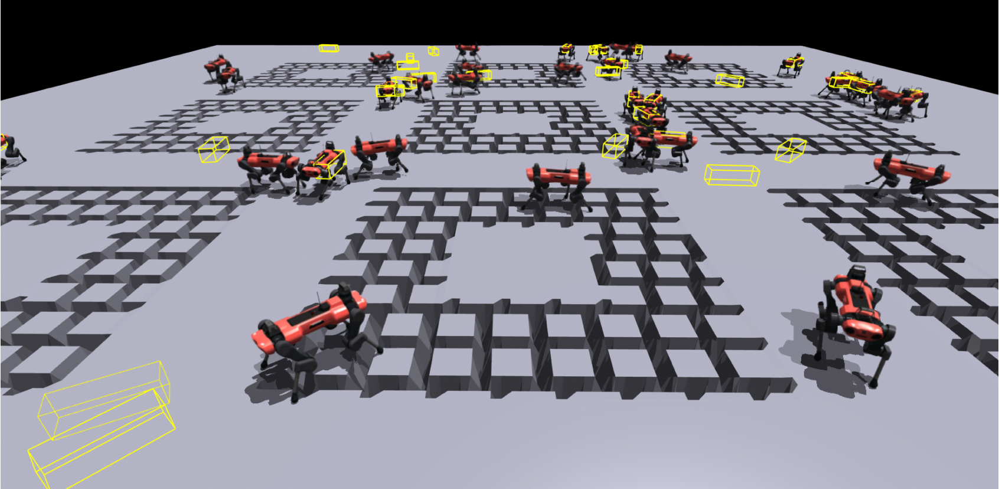

Master Thesis, D-MAVT, ETH Zürich

The main goal of this work is to train a perceptive locomotion policy for quadruped robots that can travel on the structured terrain with more precise foot placements, especially on gaps and stepping stones. This task is challenging for learning-based methods because the reward for precise footholds is sparse and not differentiable. Besides, the learned policy can easily adopt the motion to recover when it steps down in the gaps instead of setting feet precisely. In this work, we leverage the idea of imitation learning and use the perceptive model predictive controller (MPC) as the expert. Using the dataset collected from MPC in simulation offline, we utilize the framework of adversarial motion priors (AMP) and train a discriminator to distinguish the motion from the policy and the expert. The output of the discriminator will serve as the scalar reward to help train the policy. Unlike the original AMP, we add the perceptive measurement in the discriminator observation and make the style reward also an indicator of the similarity of the terrain, which can help the policy to prefer similar terrains to the expert when navigating on the structured terrains. To reduce the constraint on the robot motion and make full use of the expert motion to guide the policy behavior of crossing the gaps or stepping on the stones, we formulate the task of the policy as an end-to-end local navigation and locomotion problem. Given the position and heading target, the learned policy can travel on the gaps and stones of the same size as the expert data with a high success rate in simulated environments. Our proposed method works well in training such a terrain-adaptive locomotion policy and reducing the tuning effort despite of the effort to collect and tune the dataset.
Gap crossing
Stepping stones